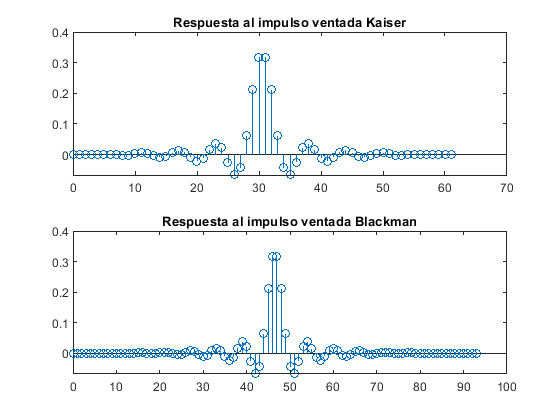
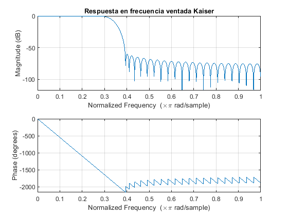
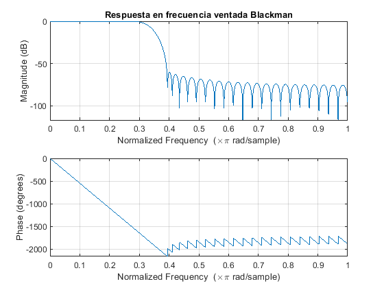
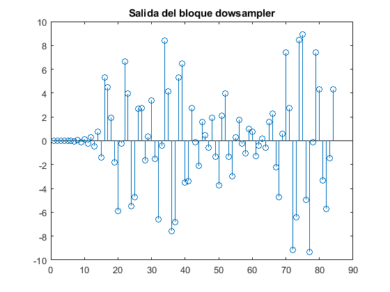
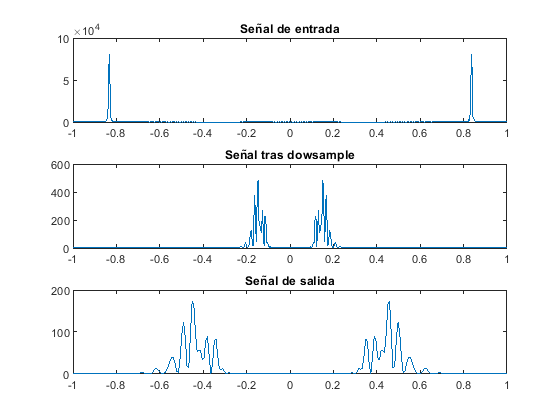

clear;clc;close all;
rng(212)
Lx = 250;
n = 0:(Lx-1);
Omega_0 = ((0.35-0.1)*pi).*rand(1,1) + 0.1*pi;
K = 25;
x = PassBandSig_4_DSP(Lx,Omega_0,K);
xn = x;
Omegac = pi*(1/3);
h_k = fir1(61,Omegac/pi,kaiser(62,5.6538));
figure(1);subplot(211);stem(0:61,h_k);
title("Respuesta al impulso ventada Kaiser");
h_VentFija = fir1(93,Omegac/pi,blackman(94));
subplot(212);stem(0:93,h_VentFija);
title("Respuesta al impulso ventada Blackman");
figure(2);
freqz(h_k,1,1024);
title("Respuesta en frecuencia ventada Kaiser");
figure(3);
freqz(h_k,1,1024);
title("Respuesta en frecuencia ventada Blackman");
rn = filter(h_VentFija,1, xn);
M = 3;
ydn = downsample(rn,M);
figure(4);stem(ydn);title("Salida del bloque dowsampler");
[Sxn,Fxn] = PSD_periodogram(xn);
figure(5);subplot(311);plot(Fxn,Sxn);title("Señal de entrada");
[Srn,Fyun] = PSD_periodogram(rn);
subplot(312);plot(Fyun,Srn);title("Señal tras dowsample");
[Sydn,Fyn] = PSD_periodogram(ydn);
subplot(313);plot(Fyn,Sydn);title("Señal de salida");
function [Sx,F] = PSD_periodogram(x)
L = length(x);
N = min([2^ceil(log2(L)+1) 2048]);
Sx = abs(fftshift(fft(x,N))).^2/L;
F = linspace(-1,1,size(Sx,2));
end
function [x] = PassBandSig_4_DSP(L,Omega_0,K)
n = 0:(L-1);
x=cos(Omega_0*n);
alphaK=(0.02)*randn(1,1);
Omega_A = (5*pi)/6;
for k=1:K
sigma_k=(1+(k/25))^-1;
A1=sigma_k*randn(1,1);
A2=sigma_k*randn(1,1);
Phi1=rand*(2*pi-pi);
Phi2=rand*(2*pi-pi);
Omega_K=Omega_0*(1+(alphaK*k));
x1=cos((Omega_K*n)+Phi1);
x2=cos(((((Omega_0)^2)/Omega_K)*n)+Phi2);
x=x+A1*x1+A2*x2+1.5*cos(Omega_A*n);
end
end
    